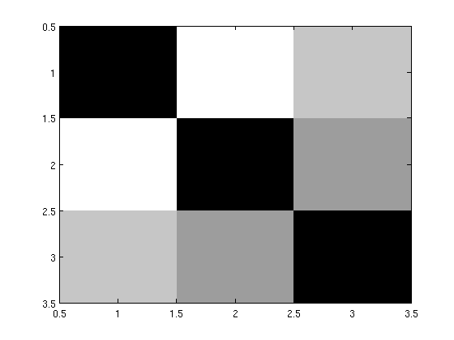

ISP_DISTANCEMEASUREDEMO Demonstrate various aspects of music distance measures
In the following, we create a music distance measure and extracts features from a song, compute distances and convert it to/from an array of doubles
First, we define our distance measure
distancemeasure.name = 'ZCR';
distancemeasure.samplerate = 8000;
distancemeasure.mono = true;
distancemeasure.options.nIterations = 0;
distancemeasure.options.nMixtures = 10;
distancemeasure.options.silent = true;
The 'computefeature' field is called using 'feval'. The wave signal is in the variable 'wav'. If an 'options' field was specified, it will be transfered to the variable 'options'. The result is returned in the variable 'feature'.
distancemeasure.computefeature = 'feature = isp_gmmtrain((wav.^2)'', options);';
The 'computedistance' field works in the same way. The variables 'feature1' and 'feature2' contain two features, and the distance between them is returned in the variable 'featureDistance'. Usually, 'computefeature' and 'computedistance' will just contain function calls and not the entire feature and distance computation code as here.
distancemeasure.computedistance = ['featureDistance=isp_gmmdistance(feature1, ' ... 'feature2, options);'];
Next, we extract the feature from two songs. The isp_extractfeature function does all necessary conversion to obtain a 8 kHz mono signal as specified. Compressed files are decompressed, and MIDI files are synthesized.
file1 = fullfile(isp_toolboxpath, 'Loveshadow - The_Acorns. Seedin Time in The Oak Room - excerpt.mp3'); features{1} = isp_extractfeature(file1, distancemeasure); file2 = fullfile(isp_toolboxpath, 'shortmidifiles', 'Chill.mid'); features{2} = isp_extractfeature(file2, distancemeasure); file3 = fullfile(isp_toolboxpath, 'shortmidifiles', 'Latin Five.mid'); features{3} = isp_extractfeature(file3, distancemeasure);
Executing LD_LIBRARY_PATH="/home/jesper/no_backup/isptoolbox/toolbox" /home/jesper/no_backup/isptoolbox/toolbox/isp_mplayer.GLNX86 -noconsolecontrols -vc null -vo null -quiet -ao pcm:file=/tmp/file67jTyj.wav:waveheader:fast -af resample=8000:1:1 "/home/jesper/no_backup/isptoolbox/toolbox/Loveshadow - The_Acorns. Seedin Time in The Oak Room - excerpt.mp3" Executing /home/jesper/no_backup/isptoolbox/toolbox/isp_mf2t.GLNX86 "/home/jesper/no_backup/isptoolbox/toolbox/shortmidifiles/Chill.mid" "/tmp/filefSidmV.txt" Executing /home/jesper/no_backup/isptoolbox/toolbox/isp_t2mf.GLNX86 "/tmp/filexy4eFD.txt" "/tmp/fileRRqVSp.mid" Executing /home/jesper/no_backup/isptoolbox/toolbox/isp_timidity.GLNX86 -idq -s 8000 -Ow --output-stereo -o "/tmp/file9b20H7.wav" -c "/tmp/file3usaDT.cfg" "/tmp/fileRRqVSp.mid" /proc/share/timidity/timidity.cfg: No such file or directory Playing /tmp/fileRRqVSp.mid Executing /home/jesper/no_backup/isptoolbox/toolbox/isp_mf2t.GLNX86 "/home/jesper/no_backup/isptoolbox/toolbox/shortmidifiles/Latin Five.mid" "/tmp/fileOcCmWS.txt" Executing /home/jesper/no_backup/isptoolbox/toolbox/isp_t2mf.GLNX86 "/tmp/fileKFFi7l.txt" "/tmp/fileVv4T1c.mid" Executing /home/jesper/no_backup/isptoolbox/toolbox/isp_timidity.GLNX86 -idq -s 8000 -Ow --output-stereo -o "/tmp/fileAD6NG2.wav" -c "/tmp/filec800PO.cfg" "/tmp/fileVv4T1c.mid" /proc/share/timidity/timidity.cfg: No such file or directory Playing /tmp/fileVv4T1c.mid
Finally, we compute the distance matrix and plot it. If the specified distance measure has a 'computedistancematrix' field, this is used to compute the distance matrix. If not, the method defined in the 'computedistance' field is called to compute all entries of the distance matrix
dstMat = isp_computedistance(distancemeasure, features, features) imagesc(dstMat) colormap(gray)
dstMat =
0 1.5267 1.1777
1.5267 0 0.9434
1.1777 0.9434 0
 If we wanted to store the features in e.g. a database and it is not of a simple type such as a vector or string, we can convert it to a vector of doubles using the isp_pickle function.
feature1vec = isp_pickle(features{1});
We can decode it to the original feature:
feature1 = isp_unpickle(feature1vec);
isequalwithequalnans(feature1, features{1})
whos feature1vec feature1
ans =
1
Name Size Bytes Class Attributes
feature1 1x1 999 struct
feature1vec 111x1 888 double
| Intelligent Sound Processing Toolbox | Contents |